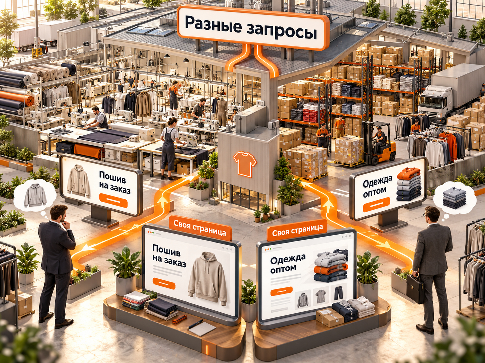
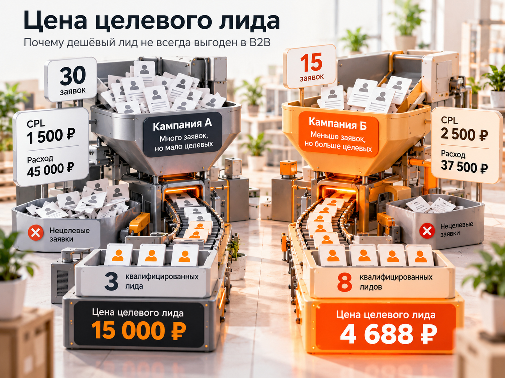

Блог о платном трафике
Контекстная реклама для B2B: как получать заявки из Яндекс Директа
Контекстная реклама для B2B помогает привлекать компании, которые ищут оборудование, товары оптом, производственные услуги или подрядчиков. Чтобы получать не просто обращения, а потенциальных покупателей, нужно связать поисковые запросы с предложением на сайте, отделять целевые заявки от нецелевых и учитывать дальнейшие сделки в CRM.
Главное отличие от массовой рекламы состоит в том, что B2B-покупатель редко принимает решение за один визит. Он сравнивает условия, согласует технические требования, запрашивает коммерческое предложение и может заключить договор только через несколько недель. Поэтому оценивать Директ исключительно по количеству форм и их цене недостаточно.
В этой статье разберём выбор между Поиском и РСЯ, подбор запросов, посадочные страницы, запуск рекламы, квалификацию лидов и расчёт бюджета. Приведу результаты собственных B2B-проектов, но не буду выдавать показатели отдельных кейсов за среднюю стоимость рекламы на рынке.
Как работает контекстная реклама для B2B
B2B (business-to-business) означает продажи товаров и услуг другим компаниям. Реклама здесь часто обращается к нескольким участникам одной покупки: собственнику, закупщику, инженеру, коммерческому директору или руководителю производства. Один оценивает цену и срок поставки, другой проверяет соответствие техническому заданию, третий согласует бюджет.
Из-за этого у контекстной рекламы B2B есть характерные особенности:
- Спрос бывает узким: отдельные промышленные изделия или специализированные услуги ищут редко, но конкретно.
- Пользователи применяют отраслевую терминологию, характеристики, маркировки и названия технологий.
- Одно обращение может означать как серьёзный запрос на закупку, так и просьбу частного лица о розничной цене.
- Между заявкой и договором могут быть техническая консультация, согласование условий и несколько касаний.
- Для понимания результата нужны данные сайта, звонков и CRM, а не только отчёт о кликах.
Когда Директ подходит B2B-компании? Когда есть сформированный спрос на продукт либо можно определить достаточно релевантную аудиторию, сформулировать для неё предложение и измерить качество обращений. Если спрос отсутствует, продукт сложно объяснить или компания не обрабатывает заявки, рекламный трафик сам по себе проблему продаж не решит.
Поиск или РСЯ: что выбрать для B2B
Поиск Яндекса позволяет обратиться к человеку в момент, когда он формулирует потребность. Запросы «промышленные дробилки купить», «пошив одежды оптом» и «LED-светильники оптом» указывают на разные коммерческие задачи, но все могут быть связаны с закупкой для бизнеса. В узких нишах объём таких запросов ограничен.
Рекламная сеть Яндекса (РСЯ) помогает охватывать потенциальных покупателей за пределами непосредственного поискового запроса. Для B2B здесь особенно важны понятное предложение, подходящая посадочная страница, сегменты аудиторий и проверка качества обращений.
| Критерий | Поиск | РСЯ |
|---|---|---|
| Намерение пользователя | Чаще выражено в запросе | Может быть не выражено прямо в момент показа |
| Основная задача | Получить обращения со сформированного спроса | Расширить охват и вернуть заинтересованных пользователей |
| Ограничение | Низкая частотность в узких нишах | Риск большого количества нецелевых обращений |
| Что проверять | Поисковые запросы, конверсию сайта и квалификацию | Площадки, аудитории, качество лидов и стоимость целевого обращения |
| Когда тестировать | При наличии явных коммерческих запросов | Когда нужен дополнительный объём или повторные касания |
На практике нельзя заранее назначить один канал победителем. В проекте организации швейного производства под ключ лучше работал Поиск. В проекте фабрики детской одежды и оптовых LED-светильников значимый объём обращений обеспечивала РСЯ. Условия и результаты этих проектов приведены ниже, в разделе с кейсами.
Для длительных сделок ретаргетинг имеет отдельную задачу: повторно показать предложение тем, кто изучал товары, читал условия или начинал заполнять форму. Такой контакт не обязательно даёт мгновенную продажу, поэтому эффективность нужно проверять по дальнейшим событиям.
Подробнее о выборе каналов: Поиск или РСЯ в Яндекс Директе.
Как собирать семантику для B2B
При подборе запросов важно учитывать не только слова «купить» и «заказать», но и то, как корпоративный покупатель описывает задачу. Для примера возьмём промышленное насосное оборудование. Приведённые ниже формулировки иллюстративные: реальные запросы и их частотность нужно проверять отдельно.
| Тип спроса | Пример запроса | Что раскрыть в объявлении и на сайте |
|---|---|---|
| Прямой коммерческий | «купить промышленный насос» | Модели, условия закупки, наличие, запрос расчёта |
| Технический | «насос для химического производства» | Назначение, материалы, характеристики, документация |
| По применению | «насос для перекачки агрессивных жидкостей» | Совместимость с задачей, подбор специалистом |
| Отраслевой | «насосное оборудование для завода» | Производственные решения, поставка юридическим лицам |
| Альтернативы | «аналог промышленного насоса [модель]» | Подбор совместимых решений при подтверждённой возможности поставки |
На старте полезно разделить направления, отличающиеся покупателем и товарным предложением. Отдельно анализировать корпоративные запросы, розничные формулировки, запросы на ремонт, инструкции, вакансии и неподходящие регионы. Минус-фразы определяют не по абстрактному шаблону, а с учётом бизнеса: например, «б/у» не нужно исключать, если компания действительно продаёт восстановленное оборудование.
В Яндекс Директе работает автотаргетинг: система сопоставляет запросы и интересы с содержанием объявления и посадочной страницы, не ограничиваясь заданными ключевыми фразами. Поэтому точные формулировки на сайте важны даже при хорошо собранной семантике. После запуска необходимо изучать отчёт «Поисковые запросы», находить нецелевой трафик и корректировать настройки.
Общие принципы: Как настроить Яндекс Директ и Минус-фразы в Директе.
Как связать поисковый запрос, объявление и посадочную страницу
У корпоративного покупателя должно быть ощущение, что он попал именно к поставщику своего решения. Если рекламировать разные направления на одной общей странице, можно потерять обращения даже при релевантных показах.
На примере фабрики одежды это две разные задачи:
| Потребность клиента | Рекламное сообщение | Посадочная страница | Основное действие |
|---|---|---|---|
| Нужно отшить партию одежды под своим брендом | «Пошив партий одежды под заказ» | Производство: возможности, минимальная партия, материалы и сроки | Запросить расчёт пошива |
| Нужно купить готовую одежду для магазина | «Готовая одежда оптом» | Оптовый каталог: ассортимент, размеры, условия отгрузки | Получить прайс |

В одном из моих проектов эти направления действительно были разделены: пошив на заказ и продажа готовой одежды со склада вели на разные посадочные страницы. Разделение помогает сохранить смысл рекламного сообщения после перехода.
Что должно быть на B2B-посадочной: конкретный продукт или услуга; технические характеристики и ограничения; минимальный объём заказа, если он есть; регионы поставки; документы и подтверждения компетенции при наличии; способы получить прайс, расчёт или консультацию. Не стоит обещать сертификаты, сроки или минимальные партии, которые бизнес не может подтвердить.
Для сложной закупки заявка на расчёт, получение каталога или подбор оборудования часто логичнее кнопки «Купить». Но сама форма не заменяет прозрачную информацию: клиент должен понимать, что именно получит после обращения.
Подробнее: Посадочная страница для Яндекс Директа.
Как запустить B2B-рекламу в Яндекс Директе
Ниже рабочая последовательность запуска. Это не универсальный шаблон настроек, а порядок решений, который позволяет проверить рекламу на реальных заявках.
- Определить экономику сделки. Уточнить маржу или доступный вклад на привлечение клиента, допустимую стоимость клиента (CAC), типовые сроки сделки и критерии целевого лида. Без этого нельзя корректно назначить рекламный бюджет.
- Разделить покупателей по задачам. Выделить оптовиков, производителей, подрядчиков или другие реальные сегменты. Для каждого сформулировать предложение и ограничения.
- Собрать запросы и подготовить посадочные. Сопоставить группы намерений с объявлениями и страницами, проверить формы, телефоны, мобильную версию и скорость работы сайта.
- Настроить измерение. Проверить цели Метрики, заявки из форм, звонки и передачу источника в CRM. Сразу определить, кто и как помечает обращение целевым.
- Запустить контролируемый тест каналов. Проверить Поиск на сформированном спросе; РСЯ запускать как отдельную гипотезу, когда хватает бюджета и понятен способ оценки качества. Не раздроблять небольшие объёмы на десятки кампаний.
- Оптимизировать по качеству, а не только по CPL. Изучать поисковые запросы, площадки, объявления, конверсии страниц и статусы обращений. Отключать неэффективные сегменты после получения достаточных данных, а не по одному случайному клику.
С автоматическими стратегиями нужно учитывать объём сигналов. Справка Яндекса рекомендует выбирать цель, которая достигается хотя бы около 10 раз в неделю, и давать стратегии время на обучение. В узком B2B, где до договора доходит мало пользователей, не всегда разумно сразу оптимизироваться на конечную продажу. Практичнее постепенно переходить от достоверных обращений к более глубоким, но достаточно частым целям.
Как отслеживать качество B2B-заявок и сделки в CRM
Квалифицированный лид в B2B - обращение компании, которое соответствует заранее установленным критериям: нужный товар или услуга, подходящий регион, объём заказа, бюджет, возможность поставки и реальная потребность. Критерии зависят от бизнеса и должны согласовываться с отделом продаж.
Для оценки рекламы полезно фиксировать последовательные этапы:
- Обращение получено: форма, звонок, письмо или другой контакт.
- Менеджер проверил потребность, регион, сроки, бюджет и доступность продукта.
- Обращение признано квалифицированным либо нецелевым с указанием причины.
- Отправлено коммерческое предложение, проведены переговоры.
- Договор заключён или сделка завершилась отказом.
Обычная цель «Отправка формы» отвечает только на вопрос, сколько людей обратились. CRM позволяет увидеть, сколько из них соответствовали бизнесу и стали клиентами. Даже если автоматической интеграции пока нет, полезно хотя бы еженедельно сопоставлять кампании с отметками «целевой / нецелевой».
Какие конверсии передавать
В Яндекс Директ можно передавать офлайн-конверсии из CRM. Для сопоставления события с визитом используются доступные идентификаторы, в частности ClientID, телефон или электронная почта. Способы передачи включают интеграцию CRM, Центр конверсий и API. Передаваемые события должны соответствовать фактическим статусам, а не быть условными отметками ради обучения алгоритма.
Перед настройкой определите, что будет сигналом: квалификация, отправка коммерческого предложения или продажа. Если событие происходит слишком редко, его можно оставить для отчётности, а стратегию обучать на более частом, но качественном действии.
Как учитывать длинный цикл продажи
Если закупка согласуется месяц или дольше, сегодняшние продажи нельзя напрямую сравнивать с сегодняшними расходами. В CRM нужно сохранять дату первого обращения и рекламный источник, а результаты анализировать по группам лидов, пришедших в один период. Офлайн-конверсии могут не сопоставиться с визитами при нарушении условий и окон атрибуции Яндекса; поэтому CRM остаётся самостоятельным источником сведений о конечных договорах.
Подробнее: Офлайн-конверсии в Яндекс Директе, Квалификация лидов и Сквозная аналитика.
Почему дешёвый лид не всегда выгоден
Сравним две условные B2B-кампании. Эти цифры взяты как расчётный пример, а не как результаты конкретного рекламодателя.
| Показатель | Кампания А | Кампания Б |
|---|---|---|
| Все заявки | 30 | 15 |
| Стоимость заявки (CPL) | 1500 ₽ | 2500 ₽ |
| Рекламный расход | 45 000 ₽ | 37 500 ₽ |
| Квалифицированные лиды | 3 | 8 |
| Доля целевых заявок | 10% | 53,3% |
| Стоимость квалифицированного лида | 15 000 ₽ | 4687,50 ₽ |

У кампании А дешевле обычная заявка, но квалифицированный лид обходится более чем втрое дороже, чем у кампании Б. Причина: после проверки остаётся только 3 обращения из 30, тогда как во второй кампании подходят 8 из 15.
Формула: стоимость квалифицированного лида = рекламный расход / число квалифицированных лидов. Для кампании А это 45 000 / 3 = 15 000 ₽. Для кампании Б: 37 500 / 8 = 4687,50 ₽, или 4688 ₽ при округлении до целого рубля.
Разделяйте три показателя: CPL (стоимость обращения), стоимость квалифицированного лида и рекламный CAC (расход на привлечённого клиента). По одному CPL нельзя утверждать, какая реклама лучше продаёт. Для полноценного CAC нужны подтверждённые сделки, а не только отправленные формы.
Сколько стоит контекстная реклама для B2B: расчёт бюджета
Универсальной цены B2B-заявки нет. Даже внутри одной отрасли стоимость зависит от региона, сложности продукта, конкуренции, сайта, предложения, качества обработки лидов и объёма спроса. Бюджет лучше рассчитывать от допустимых расходов на продажу, а не от случайной «средней цены лида».
Сначала задаются план продаж, конверсия квалифицированного лида в договор и допустимый рекламный CAC. Затем рассчитываются нужное число целевых лидов и рекламный бюджет.
Формулы:
- Нужные квалифицированные лиды = план договоров / конверсия квалифицированного лида в договор.
- Допустимый бюджет = план договоров × допустимый рекламный CAC.
- Допустимая стоимость квалифицированного лида = допустимый бюджет / нужные квалифицированные лиды.
Пример расчёта бюджета B2B-рекламы
Это условная финансовая модель, а не прогноз будущей рекламной кампании.
| Параметр | Условное значение |
|---|---|
| План продаж | 3 договора |
| Конверсия квалифицированного лида в договор | 20% |
| Необходимое число квалифицированных лидов | 15 |
| Допустимый рекламный CAC | 50 000 ₽ |
| Допустимая стоимость квалифицированного лида | 10 000 ₽ |
| Допустимый рекламный бюджет | 150 000 ₽ |
Расчёт: 3 / 0,20 = 15 квалифицированных лидов; 3 × 50 000 = 150 000 ₽. Значит, при заданных допущениях бизнес может выделить до 10 000 ₽ на один квалифицированный лид.
Если только половина обычных обращений проходит квалификацию, для 15 целевых потребуется около 30 заявок, а допустимый CPL будет 150 000 / 30 = 5000 ₽. Это ещё одно допущение примера, а не обещанная конверсия конкретного сайта.
Важно: здесь рассчитан допустимый рекламный расход, а не подтверждённый объём спроса. Чтобы понять, удастся ли потратить бюджет с нужной эффективностью, отдельно оценивают частотность и стоимость кликов, конверсию сайта, сроки теста и мощность отдела продаж. Оплата работы специалиста и применимые налоги должны учитываться в полной экономике отдельно.
Для самостоятельных расчётов: Калькулятор стоимости лида и Расчёт рекламного бюджета.
Реальные B2B-кейсы из Яндекс Директа
Ниже результаты отдельных проектов из моей практики. Они показывают возможные механики и масштабы, но не являются средними по рынку или прогнозом на 2026 год. Заявка в отчёте не равна подтверждённой продаже.
| Проект | Зафиксированный результат | Что сработало |
|---|---|---|
| Промышленные дробилки | 64 заявки через формы; около 35 000 ₽ бюджета; в исходном кейсе указан CPL 546 ₽ | Релевантный технический спрос и доступные способы обращения |
| Организация швейного производства | Около 1500-3000 ₽ за заявку, стабильная поисковая кампания около 1500 ₽ | Поиск по сформированной потребности |
| Фабрика детской одежды | РСЯ: около $4 за лид; Поиск по пошиву: около $13 | РСЯ и отдельные страницы под два направления |
| Оптовые LED-светильники | 3074 заявки за год; средний CPL 1649 ₽ без НДС; бюджет чуть более 5 млн ₽ | Основной объём из РСЯ; запрос прайса, расчёт и квиз |
Промышленное оборудование
В проекте поставщика дробилок стоимость оборудования начиналась от нескольких миллионов рублей. При рекламном бюджете порядка 35 000 ₽ поступили 64 заявки через формы, а отдельно учитывались звонки, письма и обращения через виджеты. Это пример того, что высокая цена продукта не исключает лидогенерацию через Директ. Вместе с тем по этим данным нельзя оценить количество реальных продаж. Сумма бюджета в описании округлена, поэтому приведённый CPL 546 ₽ следует воспринимать как показатель исходного кейса, а не как точное деление 35 000 на 64.
Производство одежды
У фабрики детской одежды были разделены пошив под заказ и оптовая продажа готовой продукции. В том проекте РСЯ обеспечивала лиды примерно по $4, тогда как Поиск по пошиву давал обращения примерно по $13. Долларовые суммы оставлены в исходной валюте, поскольку исторические показатели нельзя корректно пересчитывать в рубли без даты и курса.
В другом проекте, связанном с организацией швейного производства под ключ, лучше работал Поиск. Это объясняет, почему каналы нельзя выбирать только по принадлежности бизнеса к B2B: решают конкретная задача клиента и сформированность спроса.
Оптовые LED-светильники
В оптовом проекте за год получено 3074 заявки со средней стоимостью 1649 ₽ без НДС при рекламных расходах чуть выше 5 млн ₽. Основной объём давала РСЯ. Вместо одной универсальной формы использовались запрос прайса, расчёт стоимости и квиз подбора освещения. Показатель CPL отражает стоимость обращений, а не автоматически стоимость заключённой сделки.
Почему B2B-реклама не приносит целевые заявки
Причины лучше искать по всей цепочке, а не только в настройках кампании.
| Симптом | Что проверить | Что изменить |
|---|---|---|
| Есть клики, но мало обращений | Соответствие запроса объявлению, первый экран, формы, мобильную версию | Уточнить предложение и посадочную, исправить технические ошибки |
| Заявок много, но они нецелевые | Поисковые запросы, автотаргетинг, площадки РСЯ, критерии квалификации | Отсечь нерелевантные сегменты, явно указать ограничения по товару и объёму |
| CPL низкий, продаж мало | Статусы CRM, время ответа, причины отказов, долю квалификации | Оптимизировать по целевым обращениям, улучшить обработку заявок |
| Поиск не масштабируется | Частотность и охват коммерческих запросов | Проверить РСЯ, ретаргетинг и смежный спрос, не расширяя семантику бессистемно |
| Конверсии в Директе есть, CRM их не видит | Передачу источника, дублей, корректность целей, сбор ClientID | Сверить идентификаторы, формы, звонки и статусы в CRM |
| Реклама «не продаёт» в первые недели | Дату первого обращения и длительность сделки | Оценивать квалификацию раньше, договоры по зрелым когортам лидов |
Отдельно проверьте, хватает ли стратегии данных. Если целевое событие редкое, слишком жёсткие ограничения по CPA и бюджету могут ограничивать показы и обучение. Нельзя делать вывод о неэффективности канала только потому, что одна узкая кампания не набрала нужный объём.
Главное о контекстной рекламе для B2B
Контекстная реклама B2B наиболее полезна тогда, когда построена вокруг реального процесса закупки. Поиск помогает находить сформированный спрос, РСЯ может увеличивать охват, а разные задачи покупателей требуют разных сообщений и посадочных страниц.
Основной показатель для решений о развитии рекламы - не минимальная цена формы, а стоимость квалифицированного обращения и, когда данных достаточно, стоимость привлечённого клиента. Для этого нужно хранить статусы и источники в CRM, а бюджет рассчитывать от экономики будущих продаж.
Результаты моих проектов подтверждают, что единого выигрышного канала нет: в организации швейного производства лидировал Поиск, а в проектах фабрики одежды и оптовых LED-светильников значительный объём дала РСЯ. Подход к работе и другие примеры можно посмотреть на naklikay.ru.